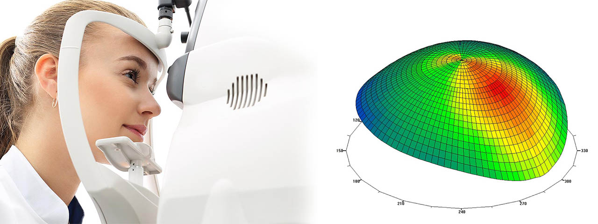

Lentes de Contacto Esclerales en Houston, Texas

Los lentes de contacto esclerales son más cómodos que los lentes de contacto corneales, en pacientes que sufren de córneas irregulares debido a queratoconos y ojo seco.
Pida una Cita
Lentes Esclerales y Tratamiento del Queratocono en Houston, Texas
Los lentes esclerales son lentes de contacto de gran diámetro que se unen sobre la córnea sin tocarla, y se acumulan en la parte blanca del ojo llamada esclera. Están llenos de agua que baña la córnea. La comodidad es mayor que en los lentes convencionales de pequeño diámetro que descansan directamente sobre la córnea, más sensibles que la esclerótica. Su material está estudiado para permitir que el oxígeno llegue a la córnea para respetar su transparencia.
No existen medidas preventivas para evitar la aparición del queratocono, pero gracias a estos tratamientos los oculistas especialistas en córnea sí suelen conseguir frenar su evolución o ralentizarla. Para una examen de la vista pida una cita hoy al 713-977-8464 .
La Dra. Rhodes es experta en queratocono. Llámenos al 713-977-8464 para una cita. Los pacientes del área de Houston, Texas, que tienen visión borrosa y luces intermitentes, pueden tener queratocono. Esta afección puede tratarse en Eye Shop bajo el cuidado de la Dra. Rhodes, una destacada optometrista.
Queratocono - Diagnóstico y Tratamiento - Eye Shop
Una córnea irregular generalmente causa problemas o limitaciones en la visión, y puede ser más complicada de corregir con anteojos o lentes de contacto estándar. Si los anteojos y los lentes de contacto normales no le ayudan a ver con claridad debido a una córnea irregular, los lentes esclerales pueden ser la solución perfecta para brindarle una visión nítida y cómoda. Los oculistas evaluarán su córnea utilizando habilidades de primer nivel y la última tecnología optométrica. Si descubrimos que es un buen candidato para el tratamiento con lentes esclerales, le proporcionaremos perfectamente un par de estos contactos especializados de primera calidad.
El queratocono es una alteración ocular o ectasia, concretamente de la córnea del ojo. La córnea sobresale hacia afuera en más de un cono. Nuestro equipo profesional de optometría, en nuestra clínica de atención ocular, está bien informado sobre cómo diagnosticar y tratar el queratocono.
El queratocono es casi siempre bilateral y no vascularizado, iniciándose en la adolescencia y evolucionando de forma variable.
El queratocono también se encuentra en familias, por lo que si usted o sus hijos están en riesgo, se recomienda contactarnos para un examen ocular completo.
Llámenos 713-977-8464
Pida su Cita
¿Qué es el Queratocono?
El queratocono es una alteración ocular o ectasia, concretamente de la córnea del ojo, que produce una distorsión de los imágenes y una disminución de la visión, que afecta sobre todo a adultos jóvenes y adolescentes.
Se produce por un adelgazamiento progresivo del espesor corneal en la zona central y paracentral de la misma, así como una modificación en la curvatura corneal.
De este modo la forma esférica de la córnea cambia por una cónica. El queratocono es casi siempre bilateral y no vascularizado, iniciándose en la adolescencia y evolucionando de forma variable.
Como consecuencia, muchos pacientes jóvenes que desean quitarse los lentes y gafas tienen contraindicado la operación de ojos con láser mediante la técnica Lasik para la corrección de las dioptrías del paciente.
La debilidad de la córnea impide cualquier cirugía refractiva sobre la misma. No obstante, si la calidad visual con graduación es buena, se puede corregir la miopía, hipermetropía y astigmatismo con un lente intraocular o ICL, una técnica reversible y que tiene ventajas sobre el Lasik.
Nuestro especialista en queratocono, en Houston, Texas, tiene años de experiencia identificando los diversos niveles de queratocono y otras afecciones corneales.
Los síntomas del queratocono
Cómo diagnosticamos el queratocono
Los síntomas del queratocono
Cuando la forma de su córnea comienza a hincharse, altera su vista de dos maneras diferentes. A medida que se forma el cono, su superficie corneal normalmente lisa se vuelve ondulada, llamada astigmatismo irregular. Además, a medida que su córnea se expande, la visión se vuelve cada vez más miope. El enfoque se vuelve imposible sin anteojos o lentes de contacto. Por lo general, los problemas comienzan en un ojo y se desarrollan más tarde en el otro ojo también.
Por lo general, la prescripción de anteojos del paciente cambiará a menudo a medida que la visión empeora y los lentes de contacto serán difíciles de usar debido a la incomodidad y al ajuste inadecuado.
Cuando el queratocono se vuelve más severo (lo que generalmente toma mucho tiempo, sin embargo, en ocasiones puede ocurrir con bastante rapidez), la córnea puede comenzar a hincharse y formar tejido cicatricial. Este tejido cicatricial puede provocar aún más distorsión visual y visión borrosa.
En conjunto, estos cambios pueden crear los siguientes síntomas:
Visión borrosa.
Destellos de luces.
Halos de luces brillantes, en la noche; deslumbramiento.
Cambio repentino de visión en un solo ojo.
Los objetos aparecen distorsionados, tanto de cerca como lejos.
Doble visión desde un solo ojo. Imágenes fantasma triples.
Cómo diagnosticamos el queratocono
Nuestros oculistas inspeccionarán cuidadosamente los signos del queratocono durante su examen ocular completo. Es fundamental informarnos de cualquier síntoma que haya estado experimentando. Para diagnosticar la afección, mediremos la forma de su córnea. La topografía corneal computarizada se utiliza para este procedimiento, que toma una fotografía de su córnea y la analiza al instante.
Lentes Esclerales y Detección del Queratocono en Houston, Texas
Para cualquier pregunta sobre lentes esclerales y el queratocono, no dude en agendar una cita con la Dra. Rhodes. La Dra. Rhodes se especializa en el manejo del queratocono, en caso de dudas, concerte una cita con ella para su detección o monitoreo.
Llámenos al 713-977-8464
Pida su Cita Aquí
Lentes de Contacto Esclerales en Houston, Texas
Home » Hablamos Español – Doctor de los Ojos en Houston, Texas » Oculista de Lentes de Contacto Esclerales en Houston
Lentes Esclerales y Tratamiento del Queratocono en Houston, Texas
Queratocono - Diagnóstico y Tratamiento - Eye Shop
¿Qué es el Queratocono?
Nuestro especialista en queratocono, en Houston, Texas, tiene años de experiencia identificando los diversos niveles de queratocono y otras afecciones corneales.
Lentes Esclerales y Detección del Queratocono en Houston, Texas


More from Eye Shop
Book your exam
Eye Shop - Located at 13130 Memorial Drive, Houston, TX 77079. Phone: 713-977-8464